WES Lexmark - Dépanner le WES
Règles générales pour le dépannage
Afin de permettre à l'équipe Support Doxense® d'établir un diagnostic de panne rapide et fiable, merci de communiquer le maximum d'informations possible lors de la déclaration de l'incident :
-
Quoi ? Quelle est la procédure à suivre pour reproduire l'incident ?
-
Quand ? A quelle date et à quelle heure a eu lieu l'incident ?
-
Où ? Sur quel périphérique et depuis quel poste de travail a eu lieu l'incident ?
-
Qui ? Avec quel compte utilisateur s'est produit l'incident ?
-
Fichier trace Watchdoc.log : merci de joindre le fichier de trace Watchdoc.
-
Fichier de traces WES : merci d'activer les fichiers de trace sur chaque file pour laquelle vous avez constaté un incident.
Une fois ces informations rassemblées, vous pouvez envoyer une demande de résolution depuis le portail Connect, outil de gestion des incidents dédié aux partenaires.
Pour obtenir un relevé optimal des données nécessaires au diagnostic, utilisez l'outil Watchdoc DiagTool fourni avec le programme d'installation de Watchdoc (cf. Créer un rapport de logs avec DiagTool).
Activer les traces du WES (WEStraces)
Pour effectuer un diagnostic du problème rencontré sur les applications embarquées, il convient d'activer les fichiers traces (logs) spécifiques aux communications du WES.
Pour activer les traces :
-
dans l'interface d'administration web de Watchdoc, depuis le Menu Principal, cliquez sur Files d'impression ;
-
dans la liste des files, cliquez sur la file dotée du WES pour lequel vous souhaitez activer les fichiers traces ;
-
dans l'interface de gestion de la file, cliquez sur le bouton Propriétés ;
-
dans la rubrique [Nom_du_WES], cliquez sur le bouton Editer la configuration:

-
dans la section WES > Diagnostic, cochez la case Activer les traces ;
-
dans la liste Niveau de traces, sélectionnez :
-
Auto : conserve les traces standard ;
- Inclure les contenus binaires : conserve les traces détaillées.
-
- dans le champ Chemin, indiquez le chemin du dossier dans lequel doivent être enregistrés les fichiers de trace. Si vous laissez le champ vide, les fichiers trace seront enregistrés par défaut dans le dossier d'installation Watchdoc_install_dir/Logs/Wes_Traces/QueueId :


Travaux de numérisation, fax et photocopie non comptabilisés
Si les travaux de numérisation, fax et photocopie ne sont pas comptabilisés par Watchdoc, vérifiez que l'adresse (nom d'hôte ou IP) du serveur Watchdoc configurée dans le périphérique est correcte :
-
dans l'interface de configuration de la file, dans la section WES, cliquez sur le bouton Etat de l'application (affiché lorsque le WES est correctement installé) ;
-
cliquez sur le bouton Télécharger afin de télécharger les fichiers de logs et de configuration du WES ;
-
si la configuration de l'adresse et/ou des ports n'est pas correcte, cliquez sur le bouton Configurer de l'interface de configuration de la file ;
-
vérifiez que la procédure a réglé le problème.
Problème de configuration
Contexte
Il arrive que l'installation du WES Lexmark échoue, le message d'erreur suivant s'affichant dans le rapport d'installation :
Push Configuration : WES Java request to 10.10..20.15 failed with status 401 Unauthorized
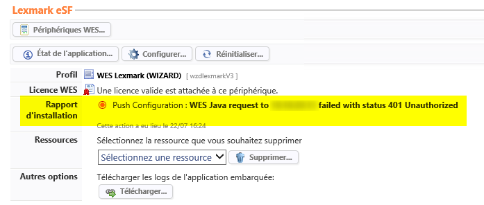
Cause
Cette erreur survient lorsque le droit d'accès à Embedded Web Server n'est pas activé sur le périphérique d'impression Lexmark.
Par défaut, ce droit est autorisé lors de l'installation de Watchdoc, mais il peut avoir été modifié. Il convient donc de le réactiver.
Résolution
-
accédez à l'interface d'administration du périphérique Lexmark eSF en tant qu'administrateur ;
-
dans le menu Paramètres, cliquez sur Sécurité :
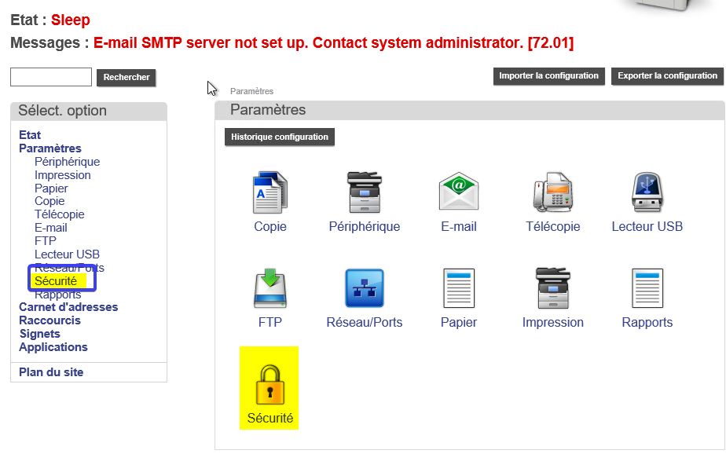
-
dans le menu Sécurité, cliquez sur Gérer les autorisations, puis Contrôles d'accès ;
-
dans les Contrôles d'accès, cliquez sur Gestion des périph.
-
cochez la case Accès à Embedded Web Server :
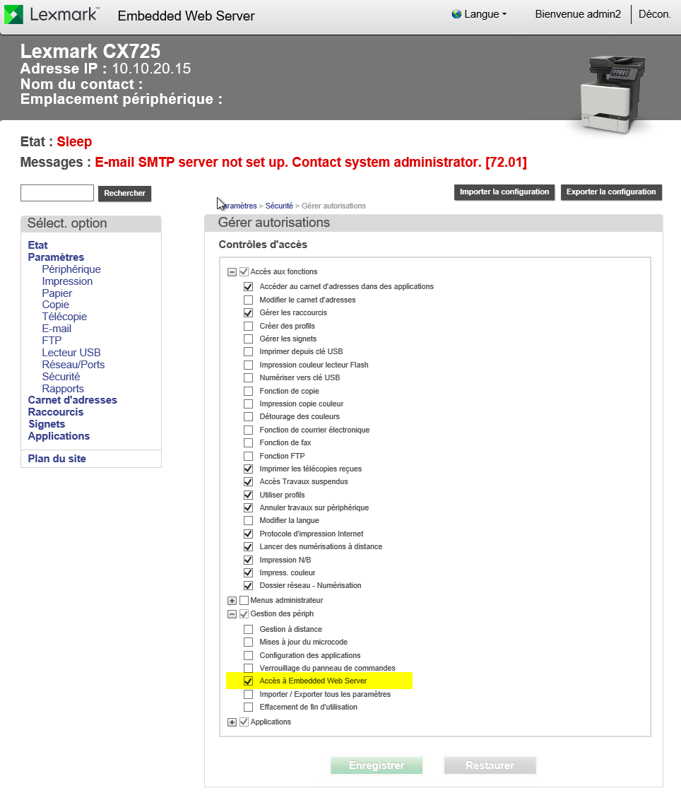
-
enregistrez le paramétrage de votre contrôle d'accès.
==> Réinstallez le WES Lexmark et vérifiez que l'installation se déroule correctement.
Message d'erreur relatif à l'installation du lecteur de cartes
Contexte
Lors de l'installation automatique du WES Lexmark, un message d'erreur s'affiche à l'étape de l'installation du lecteur de cartes (Card Reader).
Cause
Ce problème survient parce que l’application keyboardreader.fls de Lexmark n’est pas à jour dans le répertoire Redist du programme d'installation (setup) Watchdoc.
Résolution
Pour résoudre ce problème, vous pouvez :
-
soit contacter le Support Doxense pour obtenir la version à jour du setup Watchdoc ;
-
soit réinstaller la dernière version mineure disponible de Watchdoc.
Installation de Watchdoc sur modèles Lexmark dotés du SDK 4
Contexte
Lors de l'installation du WES V.3 sur les périphériques Lexmark équipé d'un SDK 4, le déploiement automatique du WES échoue.
r 20.005".
Cause
Ce problème est dû à un problème de certificat absent sur le périphérique.
Résolution
Pour résoudre ce problème, il convient d'installer une licence cSF sur le(s) périphérique's) dotés du SDK 4.x sur lequel l'installation a échoué.
Contactez le Support Lexmark, seul habilité à vous fournir cette licence.
Installation automatique du WES Lexmark impossible sur une machine SDK6
Contexte
Lors de l'installation du WES V.3 sur les périphériques Lexmark équipé d'un SDK 6, le déploiement automatique du WES échoue.
Cause
Ce problème est dû à l'absence d'un certificat sur le périphérique.
Résolution
Pour résoudre ce problème :
-
Depuis l’interface d’administration de Watchdoc, procédez à l'installation automatisée du WES en activant les WES Traces sur le périphérique (même si ça ne fonctionne pas, car on aura besoin plus tard de récupérer une partie des WES Traces) ;
-
Depuis l'interface d'administration du périphérique (Menu Select Options > Apps), installez les applications Java en respectant l’ordre suivant (les fichiers sont dans le dossier C:\Program Files\Doxense\Watchdoc\Redist\) :
-
WesCommonAppSDK6.fls
-
Wes30LexAuthSDK6.fls
-
WesScanSDK6.fls (facultatif, seulement pour WES Scan)
-
-
Récupérez le contenu du XML qui correspond à l’application de scan dans les WES Traces (attention, le fichier est différent pour chaque périphérique. Cf. ci-après pour modifier le fichier pour une autre machine).
-
dans le contenu du fichier trace, cherchez la balise <WebAppDescriptor> et sauvegardez le contenu depuis < ?xml » jusque « </WebAppDescriptor> dans un fichier .xml :
-
enregistrez ce fichier .xml au même endroit que les applications précédentes
-
depuis l'interface d'administration du périphérique, installez ce fichier en procédant comme pour les précédentes (cf. ci-dessus).
-
une fois ce fichier installé, toujours depuis l'interface d'administration du périphérique, configurez la sécurité des accès :
-
Interdisez les droits suivants à l’utilisateur public :
-
-
Email Function
-
Change languages
-
Copy color printing
-
Color dropout
-
Copy function
-
Manage bookmarks
-
Create profiles
-
Fax function
-
Firmware updates
-
Flash drive color printing
-
Flash drive printing
-
Flash drive scan
-
FTP function
-
Modify address book
-
Out of service erase
-
Remote management
-
Reports menu
-
Supplies menu
-
-
-
autorisez les droits suivants à l’utilisateur public :
-
B/W Print
-
Color print
-
-
Vérifiez le bon fonctionnement du WES.
Message d'erreur 20.005 - Impossible de trouver l'icone Watchdoc sur l'écran du périphérique d'impression
Contexte
Après installation correcte du WES Lexmark, lorsqu'on tente de lancer Watchdoc depuis l'écran du périphérique, on constate que l'icone de l'application "Mes impressions" ("MyPrints") est l'icone générique Lexmark (au lieu de l'icone Watchdoc).
Lorsqu'on clique sur cette icone, on obtient le message d’erreur suivant : "Impossible d'exécuter l'application. Contactez le fournisseur de l'application ou votre administrateur système. Erreur 20.005" :
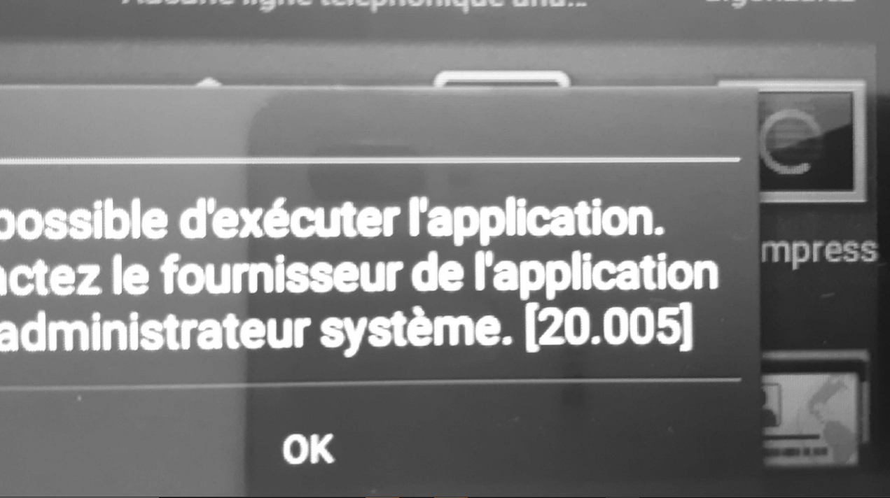
Cause
Le périphérique d'impression refuse d'échanger avec le serveur à cause d'un problème de certificat.
Le certficat SSL utilisé par le serveur Watchdoc (DSP), obsolète, ne contient pas l'adresse IP du serveur en nom alternatif (alternative name).
Résolution
Pour résoudre ce problème via le fichier config.xml :
-
stoppez le service Watchdoc ;
-
éditez le fichier de configuration config.xml ;
-
dans le fichier de configuration, cherchez la ligne commençant par "<certificate id="http-server" [...] </certificate>" ;
-
supprimez cette ligne ;
-
enregistrez les modifications apportées au fichier config.xml ;
-
redémarrez le service Watchdoc.
Pour résoudre ce problème à l'aide de WCM :
-
stoppez le service Watchdoc ;
-
lancez l'invite de commande MS Windows en tant qu'administrateur ;
-
accédez à WCM grâce à la commande cd C:\Program Files\Doxense\Watchdoc ;
-
lancez WCM >wcm ;
- dans WCM, saisissez la commande suivante :
delete http-server; -
saisissez y pour confirmer la commande ;
-
dans WCM, saisissez la commande suivante :
create http-server; -
fournissez toutes les informations relatives au serveur Watchdoc :
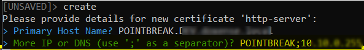
-
confirmez toutes les étapes ;
-
saisissez save pour sauvegarder les commandes ;
-
relancez le service Watchdoc.
Installation du WES impossible après la mise à jour des périphériques d'impression avec le firmware 081.234
Contexte
Le message d'erreur s'affiche dans différents contextes :
-
vous possédez un parc de périphériques d'impression Lexmark déjà installés dans un environnement contrôlé par Watchdoc.
Les périphériques Lexmark ont été mis à jour avec le nouveau firmware (081.234, publié en décembre 2023). Depuis cette mise à jour, sur l'écran du périphérique, le message "Impossible d'exécuter l'application. Contactez le fournisseur de l'application ou l'administrateur système. [20.005]" ou "Contacter administrateur système" s'affiche et l'utilisateur ne peut plus accéder à Watchdoc :
-
après installation correcte du WES Lexmark, lorsqu'on tente de lancer Watchdoc depuis l'écran du périphérique, on constate que l'icone de l'application "Mes impressions" ("MyPrints") est l'icone générique Lexmark (au lieu de l'icone Watchdoc).
Lorsqu'on clique sur cette icone, on obtient le message d’erreur suivant : "Impossible d'exécuter l'application. Contactez le fournisseur de l'application ou votre administrateur système. Erreur 20.005" :
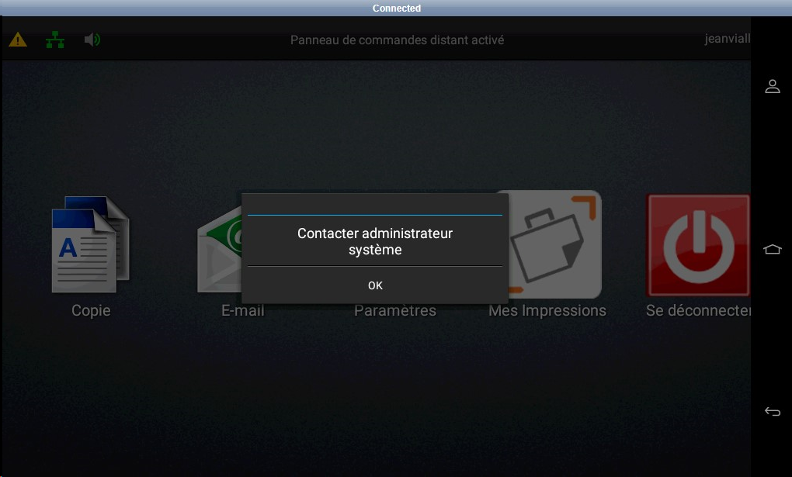
Cause
Le nouveau firmware mis à disposition par Lexmark ne fonctionne plus comme le précédent : il nécessite désormais un certificat avec l’extension CA=TRUE qui signifie qu’il est marqué comme une autorité de certification (CA).
Résolution
Pour résoudre ce problème, il existe une solution de contournement, décrite ci-dessous.
Elle nécessite de mettre à jour Watchdoc, au minimum avec la version 6.0.0.4856 et s'appuie sur l'outil WCM.
Supprimer le certificat existant
-
Arrêtez le service Watchdoc.
-
Lancez une invite de commande Windows en mode administrateur puis accédez à l’outil wcm :
Cd C:\Program Files\Doxense\WatchdocC:\Program Files\Doxense\Watchdoc>wcmWCM affiche des informations selon lesquelles le certificat http-server est auto-signé [self-signed] :
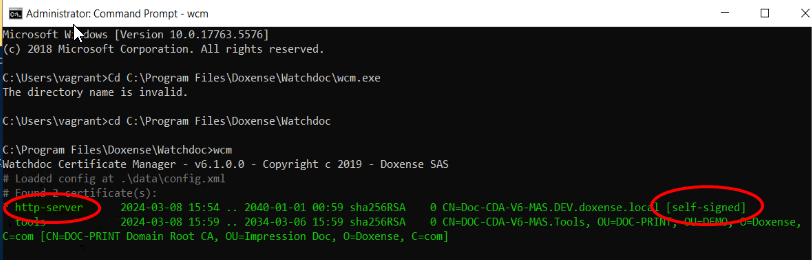
-
Saisissez la commande
deletepour supprimer le précédent certificat :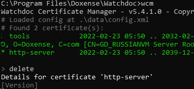
d
-
Saisissez
ypour confirmer la suppression. -
Puis saisissez
savepour enregistrer la suppression :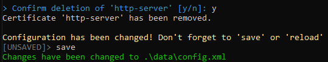
→ Un message confirme que les modifications ont été prises en compte dans le fichier config.xml
Créer un nouveau certificat
-
A l'invite de commande, saisissez
createpour créer un nouveau certificat. -
Appuyez sur Entrée après chaque ligne pour confirmer l'information affichée.
-
Pour la ligne
More IP or DNS, ajoutez les adresses IP, DNS ou FQDN de tous les serveurs concernés par la modification, séparés par un point-virgule. -
WCM indique que le certificat est CA=true : en cliquant sur Entrée pour approuver, vous acceptez d'installer un certificat déclaré certificat d'autorité (CA).
-
Après avoir approuvé toutes les autres conditions, saisissez
ypour confimer la création :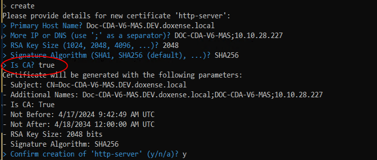
-
WCM génère alors la clé privée, la clé publique et la requête (CSR).
-
saisissez
savepour confirmer la génération du certificat et quittez WCM.
Réinstaller les WES Lexmark
-
Redémarrez le service Watchdoc.
-
Réinstallez les WES sur tous les périphériques d'impression Lexmark du parc, concernés ou pas par le problème.
Alternative
Pour résoudre ce problème de manière pérenne et régulière, nous vous recommandons d'obtenir de la part de votre contrôleur de domaine un certificat d'autorité (CA) pour le site web Watchdoc.
Suivez ensuite la procédure permettant de l'installer pour Watchdoc et WSC (cf. WCM - Signer un certificat). Au terme de cette procédure, il ne sera pas nécessaire de réinstaller les WES sur les périphériques.
Impossible d'utiliser WEScan Scan to folder et Scan to mail. Erreur 900.70 du firmware
Contexte
Sur Watchdoc v5.5, après authentification sur le WES, l'utilisateur lance l'application WEScan. Lorsqu'il lance Scan to folder ou Sacan to mail (numériser vers un dossier ou numériser et envoyer par mail), le message d'erreur suivant s'affiche : "Firmware Error [900.70]. JVM exit status 1: General Failure /usr/share/java/jre/bin/java:928 IP Address: [adresse_ip]. Logging crash... Do not power off."
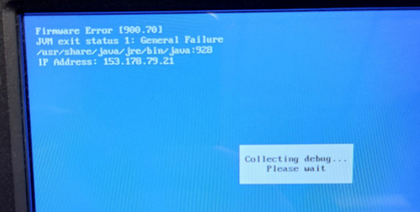
Puis, le périphérique d'impression redémarre. Après plusieurs tentatives, le périphérique ne redémarre plus automatiquement : il est nécessaire de le redémarrer manuellement.
Cause
Le problème est lié à une instabiilité du firmware.
Résolution
Il convient de mettre à jour le firmware Lexmark du périphérique d'impression.
Enregistrer manuellement Watchdoc ScanCare sur un périphérique Lexmark
Contexte
Il arrive que l'installation automatique de Watchdoc ScanCare sur un périphérique Lexmark échoue. Il est alors nécessaire de procéder à l'installation manuellement.
Prérequis
Pour enregistrer manuellement Watchdoc ScanCare sur un périphérique Lexmark, les conditions suivantes doivent être respectées :
-
le périphérique est déjà déclaré dans la Gestion des périphériques de Watchdoc ScanCare (voir Enregistrement automatique de Watchdoc ScanCare sur un périphérique).
-
Une licence a été assignée au périphérique dans le programme de configuration de Watchdoc ScanCare.
Procédure
Préalable
Avant d'installer manuellement Watchdoc ScanCare, assurez-vous que la fonction Utiliser profils est paramétrée sur le paramètre Pas de sécurité :
1. accédez à l'interface web d'administration du périphérique Lexmark (en saisissant son adresse IP dans un navigateur web) ;
2. Dans la page d'administration du périphérique Lexmark, cliquez sur l'entrée de menu Paramètres :
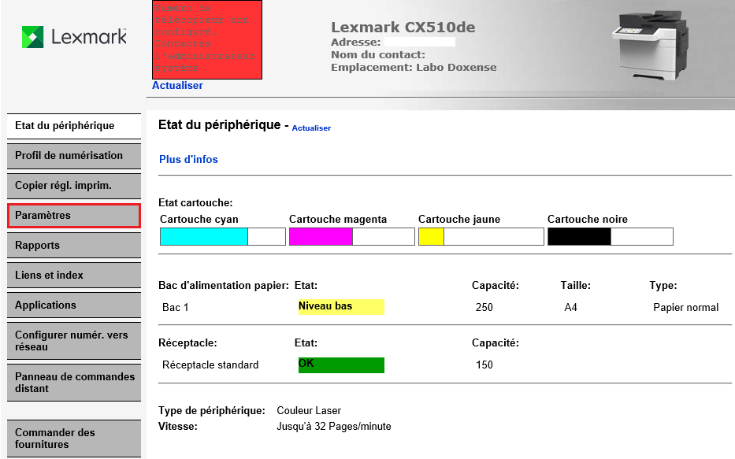
3. Dans la section Autres paramètres, cliquez sur Sécurité :
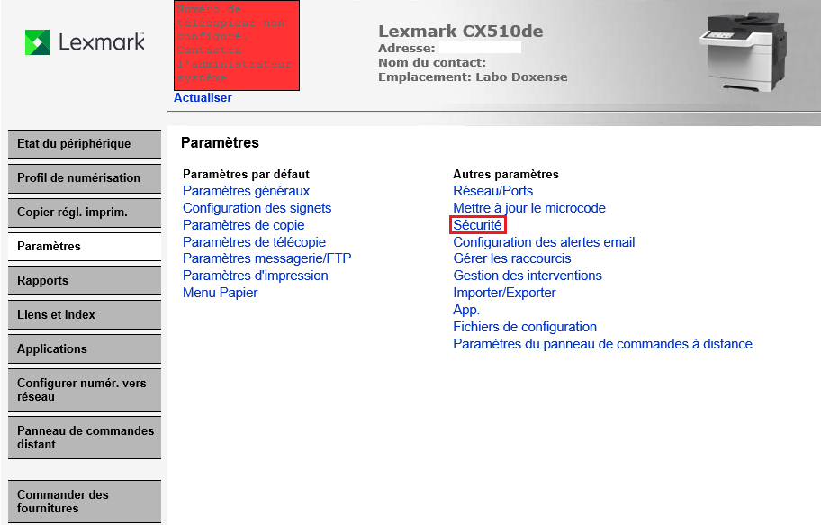
4. Dans la section Sécurité, cliquez sur Configuration de sécurité :
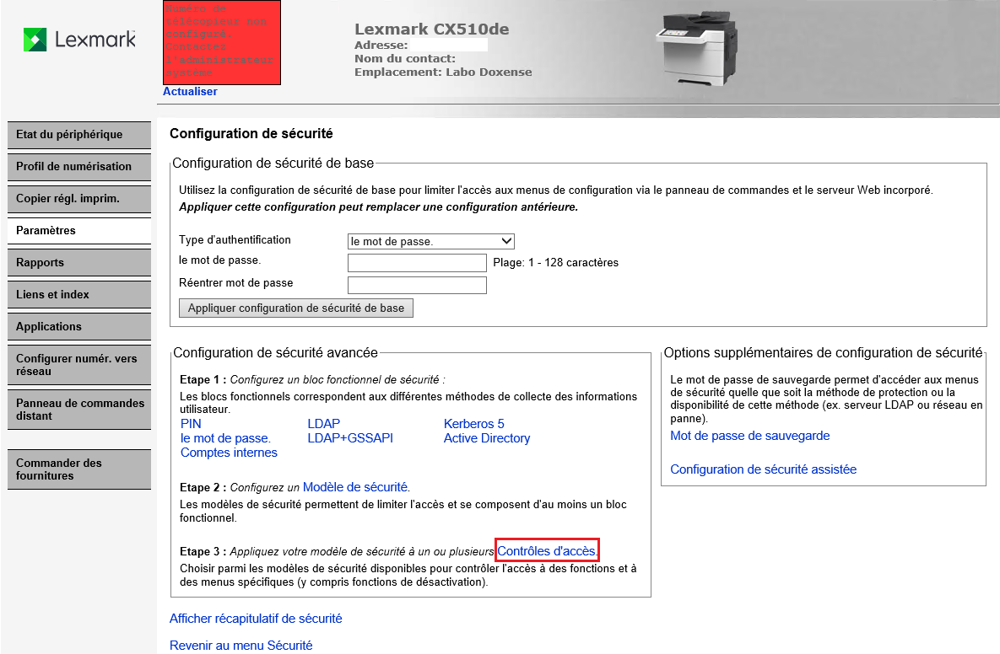
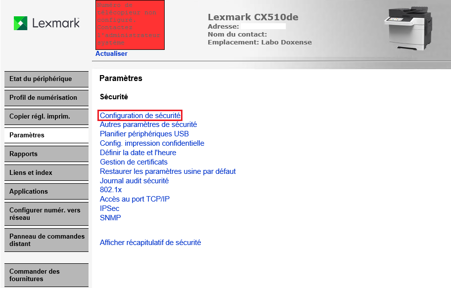
5. Dans la section Configuration de sécurité avancée, cliquez sur Contrôles d'accès :
6. ouvrez le dossier Accès aux fonctions, puis, dans la liste déroulante Utiliser profils, sélectionnez Pas de sécurité :
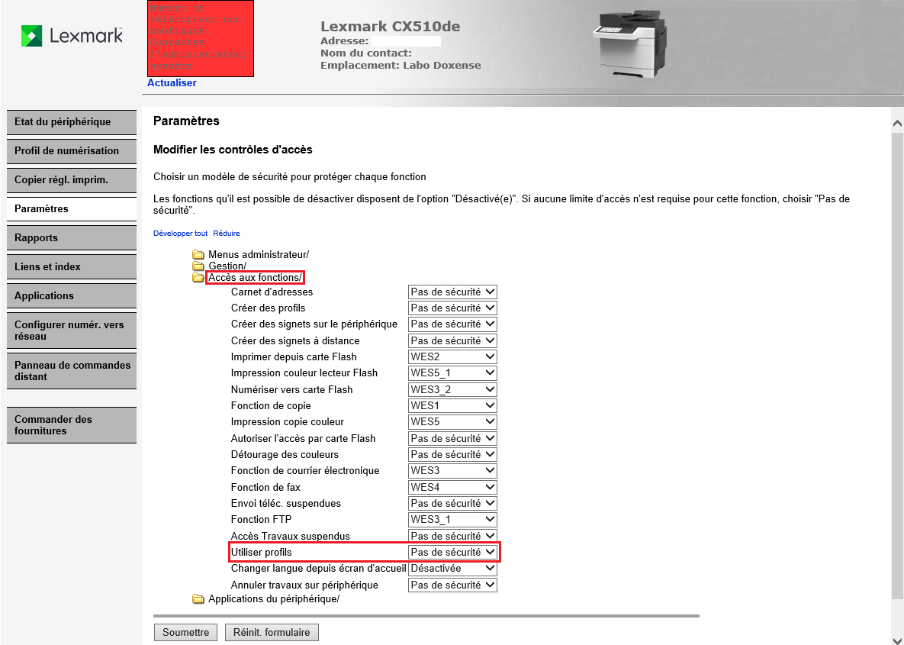
7. Validez ce paramétrage.
Enregistrer manuellement Watchdoc ScanCare sur un périphérique Lexmark (eSFv3, eSFv4)
1. accédez à l'interface web d'administration du périphérique Lexmark (en saisissant son adresse IP dans un navigateur web) ;
2. dans la page d'administration web du périphérique, cliquez sur le menu Paramètres.
3. Dans la section Autres paramètres, cliquez sur App. :
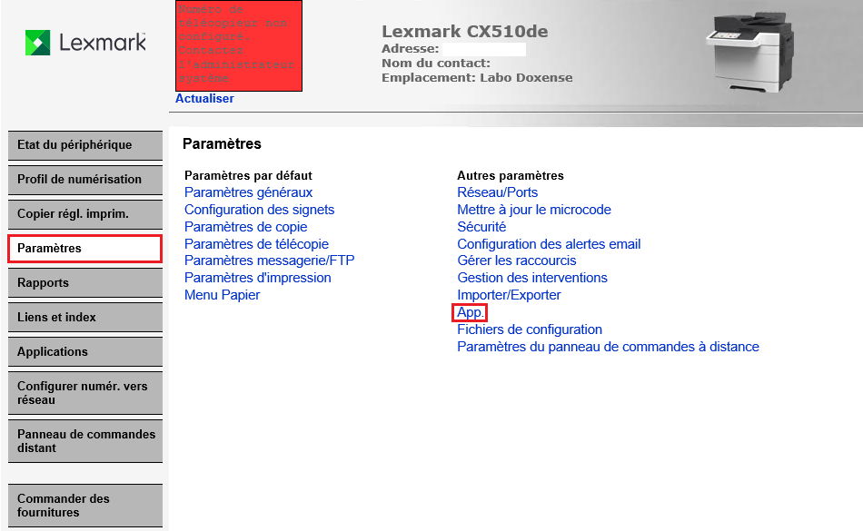
4. dans l'interface App., section Gest.app, cliquez sur Gest. app. :
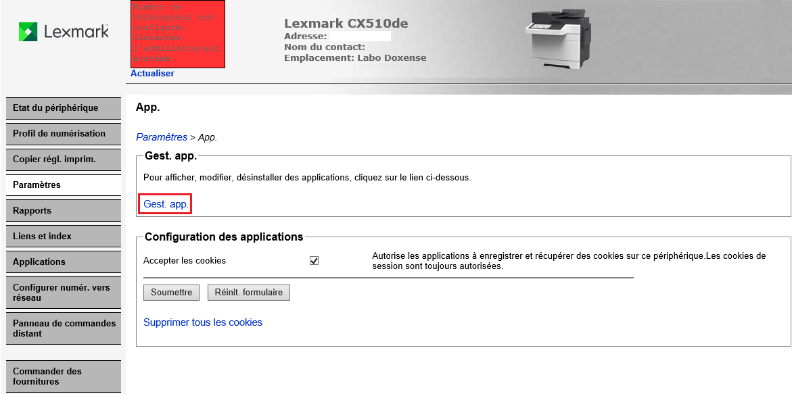
5. En bas de l'interface App., cliquez sur Inst. nouv. app.. :
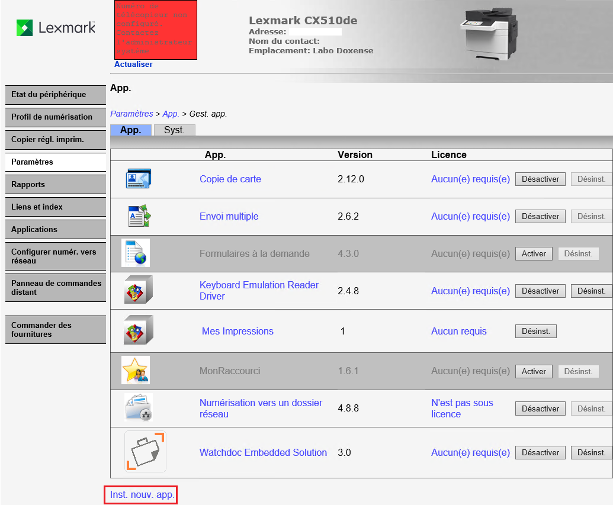
6. dans la section Inst. nouv. app., cliquez sur Browse pour vous rendre dans le dossier [...]Doxense\ScanCare\AddIn;
7. dans ce dossier, sélectionnez le fichier DrivveImage.fls., puis cliquez sur Ouvrir :
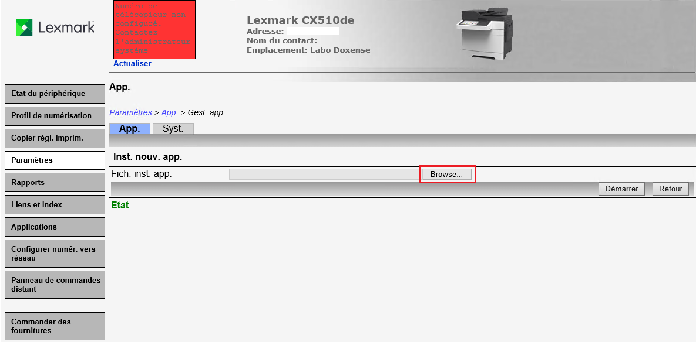
8. une fois le fichier affiché dans le champ de sélection, cliquez sur le bouton Démarrer :
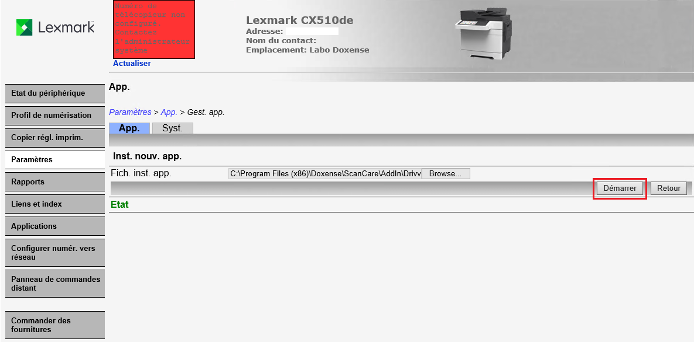
9. Lorsque le message indique que l'application est correctement installée, cliquez sur l'onglet App. :
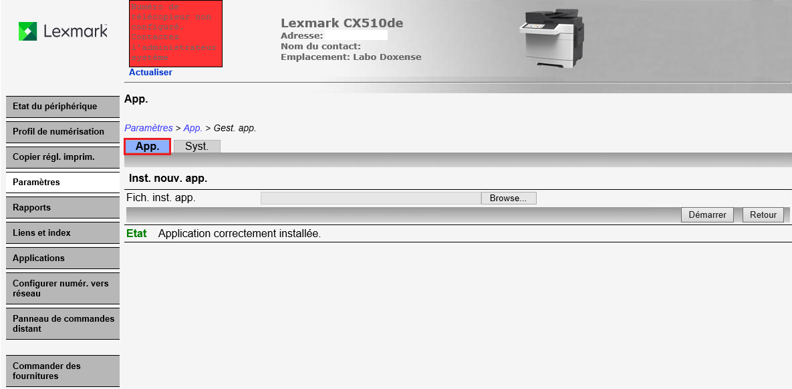
10. Sous l'onglet App, cliquez sur Drivve Image :
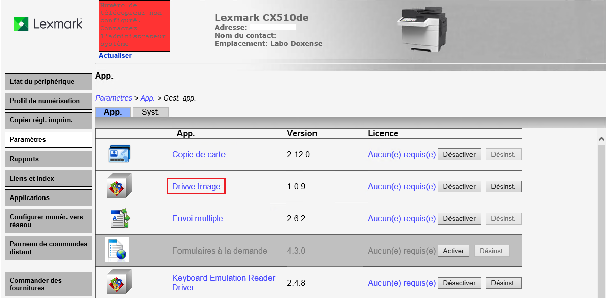
11. Sous l'onglet Configurer de l'interface Drivve Image, pour le paramètre Serveur, saisissez l'adresse IP du serveur Watchdoc ScanCare
12. puis, cliquez sur Appliquer :
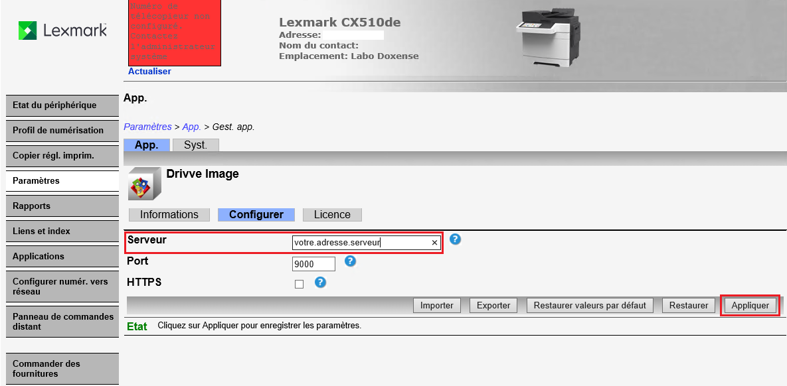
==> L'enregistrement de Watchdoc ScanCare sur le périphérique Lexmark est terminé.
Enregistrer manuellement Watchdoc ScanCare sur un périphérique Lexmark (eSFv5, eSFv6 basé sur Android)
Suivez la procédure suivante :
1. accédez à l'interface web d'administration du périphérique Lexmark (en saisissant son adresse IP dans un navigateur web) ;
2. dans la page web d'administration, cliquez sur l'entrée de menu Applications :
3. dans la section Application, cliquez sur App. installées :
4. Cliquez sur le bouton Installer app.
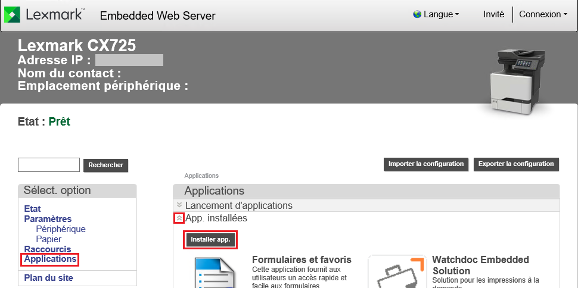
5. dans la section Installer app., cliquez sur Parcourir pour vous rendre dans le dossier [...]Doxense\ScanCare\AddIn;
6. Sélectionnez le fichier DrivveImageAndroid.fls sur le serveur Watchdoc ScanCare
7. Cliquez sur Instal. :
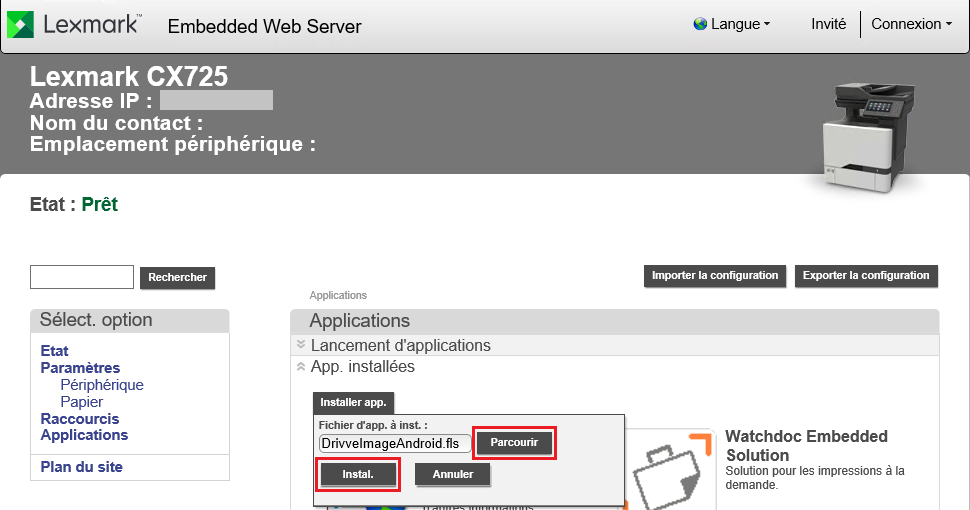
8. Quand le message de fin d'installation s'affiche, cliquez sur OK
9. Dans la section Application, cliquez sur la section Drivve Image pour la déployer ;
10. Cliquez sur Configurer :
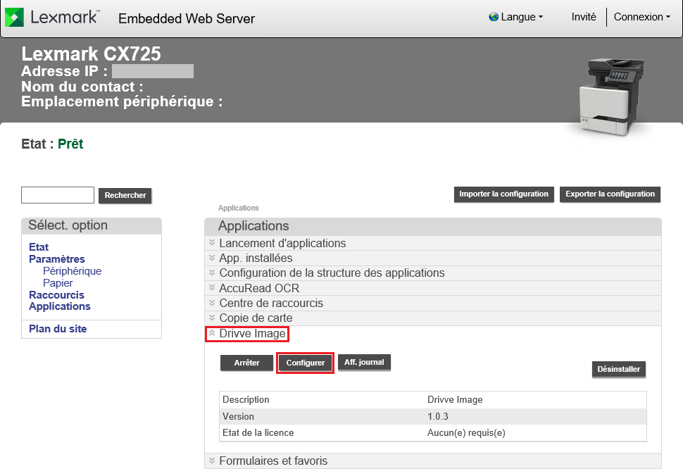
11. Configurez :
dans le champ Serveur : l'adresse IP du serveur Watchdoc ScanCare ;
dans le champ Port : le port affiché dans la gestion des périphériques de Watchdoc ScanCare (si le Port est différent de l'URL du serveur Watchdoc ScanCare affichée dans la gestion des périphériques) ;
dans le champ Parameters, indiquez les paramètres habituels de Watchdoc ScanCare pour définir la langue de l'interface utilisateur et du clavier (par exemple ?ln=fr ou ?kb=fr pour paramétrer l'interface utilisateur et le clavier en français). Utilisez l'esperluette (&) comme séparateur par exemple dev=lexmark&ln=en&kb=en).
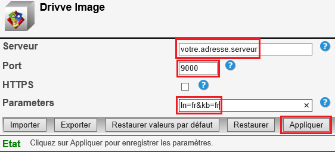
12. Confirmez avec Appliquer :
==> L'enregistrement de Watchdoc ScanCare sur le périphérique Lexmark est terminé.